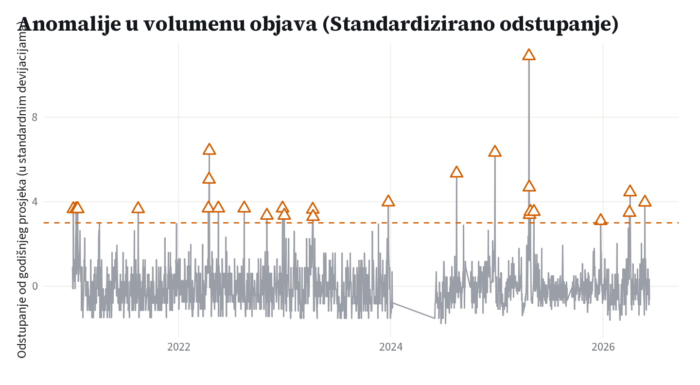
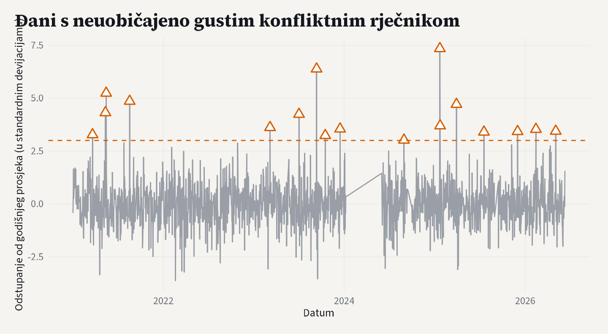

Fokus na događaje (2021.–2026.)
Dani kada se volumen ili konfliktni rječnik ističu
Kada se dnevni obrazac promijeni
Ažurirano24. kolovoza 2026. Podaci zaključno s11. lipnja 2026. StatusPreliminarno
Sažetak
Mapa prelazi s dugoročnih obrazaca na pojedine dane i dva odabrana slučaja. Standardizirane vrijednosti označavaju dane s neuobičajenim volumenom ili konfliktnim rječnikom. Prozor oko Uskrsa 2022. prati temu Duhovnost i liturgija. Presjeci o Stepincu prikazuju dostupne riječi, ali ne čine potpunu vremensku seriju.
Podaci pokazuju koji se dani i godišnji presjeci ističu u uzorku. Ne mogu sami otkriti uzrok, namjeru autora ni događaj koji je izazvao promjenu. Ograničenja dnevnih vrijednosti opisuje Metodologija.
Kada pažnja naraste i što je može pokrenuti? Nakon pregleda aktera i platformi, tema i atmosfere diskursa, Fokus na događaje promatra dnevne promjene. Mapa odgovara na istraživačko pitanje Q4 o promjeni tema i tona kada se dogodi nešto važno. Označava neuobičajene dane i opisuje dva slučaja. Prvi je razdoblje oko Uskrsa 2022. Drugi su dostupni godišnji presjeci riječi u tekstovima o Alojziju Stepincu.
Prvi postupak traži dane koji snažno odstupaju od godišnjeg prosjeka volumena ili konfliktnog rječnika. Drugi prati jednu temu, tonalitet i konfliktni rječnik oko unaprijed odabranog blagdana. Treći uspoređuje imenice i pridjeve u tekstovima koji spominju Stepinca. Nijedan postupak sam ne utvrđuje uzrok promjene.
Analiza obuhvaća 12.384 dokumenta iz korpusa od 413.985 objava. Odabir uzorka opisuje Metodologija. Gustoća konfliktnog rječnika pokazuje broj podudaranja na tisuću riječi. Godina 2026. nije potpuna. Dnevni rezultat može biti nestabilan kada je za taj dan uzorkovano malo tekstova.
Dani koji odstupaju od godišnjeg prosjeka
Za svaki dan računa se koliko standardnih devijacija odstupa od prosjeka svoje godine. Tako se lakše uspoređuju godine s različitim razinama. Postupak ipak ostaje osjetljiv na dane s malo tekstova u uzorku.
Označavaju se dvije vrste odstupanja. Vrh volumena ima više objava od godišnjeg prosjeka za više od 3 standardne devijacije. Isti se prag primjenjuje na dnevni prosjek konfliktnog rječnika. Ta dva rezultata treba čitati odvojeno. Velik broj objava ne znači nužno i mnogo konfliktnog rječnika.
Dani s neuobičajenim brojem objava
Pitanje. Koji dani odstupaju od godišnjeg prosjeka broja objava za više od tri standardne devijacije?
Nalaz. Trokuti označavaju rijetke vrhove volumena, ali ne određuju događaj koji ih je proizveo.

Sažetak grafikona. Označeno je 26 dana neuobičajenog volumena. Najveća odstupanja padaju na 21. 4. 2025., 17. 4. 2022. i 25. 12. 2024..
Dani s neuobičajeno gustim konfliktnim rječnikom
Pitanje. Koji dani odstupaju od godišnjeg prosjeka gustoće konfliktnog rječnika za više od tri standardne devijacije?
Nalaz. Vrhovi konfliktnog rječnika ne podudaraju se nužno s vrhovima volumena.

Sažetak grafikona. Označeno je 17 dana neuobičajene gustoće konfliktnog rječnika. Najveća odstupanja padaju na 22. 1. 2025., 12. 9. 2023. i 15. 5. 2021..
Crvene točke označavaju 26 dana s vrhom volumena i 17 dana s vrhom konfliktnog rječnika. Tri najveća odstupanja volumena padaju na 21. 4. 2025., 17. 4. 2022. i 25. 12. 2024.. Tri najveća odstupanja konfliktnog rječnika padaju na 22. 1. 2025., 12. 9. 2023. i 15. 5. 2021.. Tablice prikazuju sve označene dane i veličinu odstupanja.
Oznake upozoravaju na odstupanje. Ne prepoznaju događaj automatski. Za provjeru njihove preciznosti trebao bi neovisan popis događaja i usporedba s označenim danima. Takva provjera nije provedena. Svaki vrh zato treba povezati s blagdanom, izborima ili drugim događajem tek nakon čitanja objava toga dana.
Tema Duhovnost i liturgija oko Uskrsa 2022.
Uskrs 2022. unaprijed je odabran kao primjer. Slavljen je 17. travnja. Promatrano razdoblje obuhvaća 29 dana, a uzorak sadrži podatke za 28 dana. Uskrs se ne uspoređuje s posebnim uzorkom političkih ili drugih događaja.
Grafikon prati temu Duhovnost i liturgija tijekom 14 dana prije i 14 dana poslije blagdana. Tri odvojena dijela prikazuju njezin dnevni udio, prosječnu gustoću konfliktnog rječnika i prosječni tonalitet.
Pitanje. Kako se oko Uskrsa 2022. kreću udio teme, konfliktni rječnik i tonalitet?
Nalaz. Tri odvojena dijela pokazuju da se mjere ne kreću jednako. Nijedna sama ne opisuje cijeli događaj.

Sažetak grafikona. Udio teme najviši je 25. 4. 2022.. Dnevni tonalitet i konfliktni rječnik ne kreću se istim obrascem.
Što se vidi oko Uskrsa 2022.
Udio teme Duhovnost i liturgija najveći je 25. 4. 2022.. Tada iznosi 100,0 %, ali temelji se na samo 3 dokumenta. Na sam Uskrs udio iznosi 58,3 % među 24 dokumenta. Prosječni tonalitet kreće se od 0 do 0,84. Prosječna gustoća konfliktnog rječnika kreće se od 20 do 168.
Grafikon pokazuje kada se tema pojačava u uzorku i kako se dvije jezične mjere kreću oko blagdana. Ne opisuje sve objave ni osjećaje publike. Ne pokazuje ni obrazac koji vrijedi za sve liturgijske događaje. Za takav zaključak trebalo bi istim postupkom analizirati više unaprijed odabranih vjerskih i drugih događaja.
Riječi u tekstovima o Alojziju Stepincu
Zadnji dio uspoređuje imenice i pridjeve u tekstovima koji spominju Stepinca u bilo kojem obliku te riječi. Grafikon ne mjeri koliko su riječi blizu imena. Ne određuje stav prema Stepincu i ne rekonstruira cijelu priču teksta.
Postupak broji imenice i pridjeve u tim tekstovima te mjeri njihov prosječni tonalitet. Uzorak daje podatke za godine 2023, 2024, 2025 i 2026. Grafikon zato uspoređuje samo dostupne godine. Ne prikazuje potpunu vremensku seriju.
Pitanje. Koje se riječi najčešće pojavljuju u dostupnim godišnjim presjecima tekstova o Stepincu?
Nalaz. Najčešće riječi razlikuju se među dostupnim godinama, ali praznine ne dopuštaju zaključak o trajnoj promjeni šire priče.

Sažetak grafikona. Dostupni su presjeci za godine 2023, 2024, 2025 i 2026. Razlike među riječima ne čine kontinuiranu vremensku seriju.
Kako čitati godišnje presjeke
Pet najčešćih prikazanih riječi po godini jesu U 2023. godini pojavljuju se svet, biskup, misa, prvi, život. U 2024. godini pojavljuju se bl., blažen, nada, ostatak, zagrebački. U 2025. godini pojavljuju se biskup, križni, put, čovjek, ljubav. U 2026. godini pojavljuju se vrijeme, crkva, drugi, strana, knjiga. Razlike su opisne. Promjena riječi između godina ne znači nužno promjenu šire priče. Bez potpunijeg ciljanog uzorka nije moguće pouzdano utvrditi smjer ni trajanje promjene.
Glavni nalazi
Mapa daje tri ograničena rezultata. Dnevni postupak označio je 26 vrhova volumena i 17 vrhova konfliktnog rječnika. Njihovu vezu s događajima tek treba provjeriti čitanjem sadržaja. Prozor oko Uskrsa opisuje jednu temu i dvije jezične mjere u jednom slučaju. Nema usporedne skupine drugih događaja. Presjeci o Stepincu pokazuju dostupne riječi, ali ne čine neprekinutu vremensku seriju.
Pouzdaniji model tražio bi unaprijed određen popis događaja, zaseban skup za provjeru i najmanji dopušten broj tekstova po danu. Trebalo bi provjeriti i koliko točno model prepoznaje događaje. Tek bi tada bilo moguće govoriti o pouzdanom automatskom prepoznavanju ili predviđanju.
Već se vide obrasci korisni za planiranje. Najveći vrhovi pažnje povezani su s datumima koji su poznati unaprijed, a ne s prijeporima. Kalendar zato pomaže predvidjeti velik dio godišnje pažnje. Onaj tko planira objave može vidjeti koji su termini već zasićeni, a gdje ima više prostora.